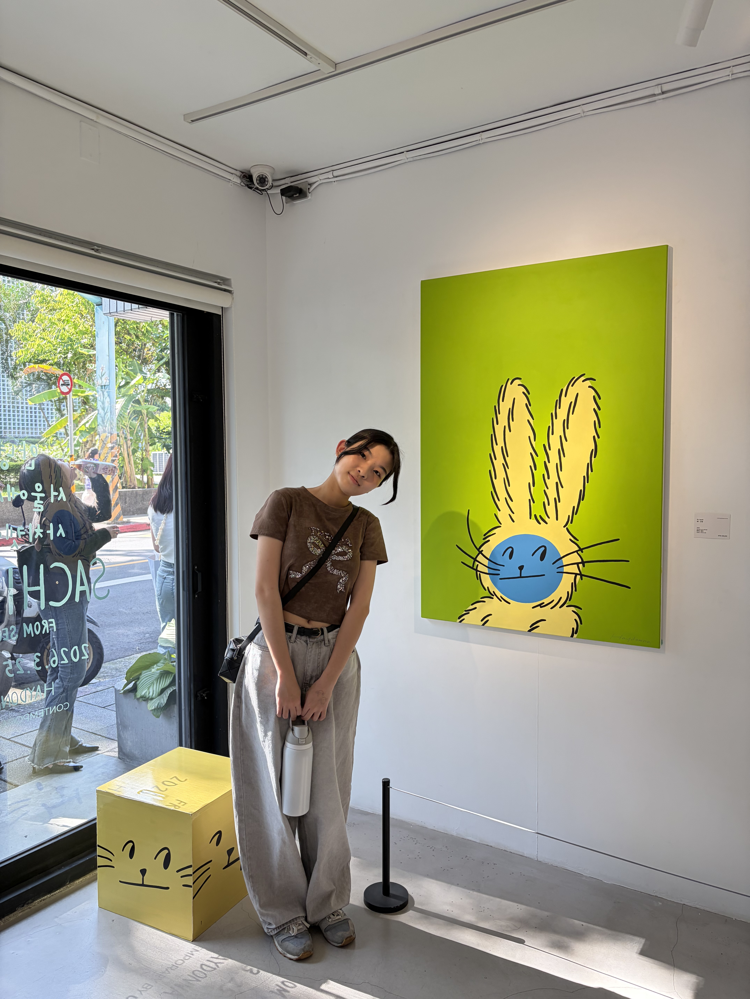

About Me
|
 |
彭巧雲 Cloe PengEducation
|
我目前就讀數位科技設計學系四年級，對 UI/UX 設計、 網頁設計與前端開發有濃厚的興趣。 喜歡從使用者需求出發，思考如何讓介面更加清楚且容易操作。
目前於台聚集團資訊處實習， 參與 AI 系統介面設計、視覺設計及影片製作等工作， 累積了實際專案與跨領域合作的經驗。
在校期間也參與多項網站與遊戲設計專題， 使用 Figma 規劃介面， 並透過 HTML、CSS 及 JavaScript 進行網頁開發。 希望未來能持續朝 UI/UX 與互動設計領域發展。
Experience
| 系上營隊｜美宣 | 2024.04-2024.07 |
| 113學年度系學會｜公關股股長 | 2024.07-2025.06 |
| 台聚集團 資訊處｜UI/UX實習生 | 2026.07-現在 |
| 第二屆金聚獎｜策展人 | 2026.08-2026.09 |
Skills
| UI 設計 | Figma | 2D 繪圖 | Photoshop、Illustrator | 程式設計 | C/C++、Java |
| 網頁設計 | React、Redux | 遊戲設計 | Unity | 專案管理 | Notion |
| 3D 建模 | Blender | 其他技術 | Firebase、Git |
Projects
Web Design

K-POP MUSIC CHART為喜歡K-POP流行音樂的追星族設計的中文網站，整理出各種不同的音樂節目和各式的年末頒獎典禮資訊，讓不會韓文的人在追星的路上能夠更加方便且快樂。 |

VINYL ROASTS結合「咖啡歷史」與「黑膠音樂」的咖啡廳點餐網站，透過介紹咖啡的歷史，讓顧客感受到咖啡的文化魅力。每款商品皆搭配對應的黑膠音樂，在點餐的同時還能邊聽音樂，就像走進一間有靈魂的咖啡館。 |
Game Design

逃離日料店一款線上劇本殺遊戲，玩家將分別扮演5種日料店中的生食海鮮，在充滿壓迫感的廚房空間中尋找逃脫機會。透過收集線索、討論、推理判斷，在彼此合作與猜忌之間找出真相，並試圖逃離這場危機。 |

潮夢玩家駕駛潛水艇，利用海洋(如洋流、生物、礦物等)，及潛水艇功能(如發射魚雷、探測掃描等)特性，結合發展出豐富多元的關卡及玩法，發掘亞特蘭提斯的奇幻與神祕文明。 |
Graphic Design

金聚獎主視覺以「2」與中文字「金聚」解構為核心，結合動態模糊與顆粒質感，呼應生成式 AI 的運算意象；延伸集團品牌藍金配色，展現科技感與競賽榮譽。 |

夜市小吃主題桌曆設計將12個月份視覺化為對應台灣夜市小吃，並運用溫和的暖色調與圓潤線條，呈現小女孩與美食互動的插畫。希望藉由具食欲感的色彩，喚起台灣人熟悉的日常文化記憶，讓人在翻閱時，產生對下個月份美食的期待。 |

個人名片設計我以喜歡的黑膠唱片為載體製作名片外觀，象徵對經典與生活質感的追求，並加入代表個人特質的粉藍色雲朵，希望透過從封套中抽出唱片的互動，讓人瞬間產生儀式感，並在第一眼記住我的風格。 |
AI Creation

我的礁島想像以奇幻甜點世界為發想，將火山轉化為流淌巧克力的熔岩火山，結合夕陽、粉色海洋與繽紛糖果，透過 AI 生成具有立體寫實感的夢幻島嶼，呈現充滿視覺張力的奇幻場景。 |

我的礁島想像_2以童話繪本為創作方向，將礁島想像成一座由薑餅屋、軟糖小熊與棒棒糖組成的糖果村莊，透過 AI 呈現柔和的水彩筆觸與粉嫩色彩，打造溫馨療癒、充滿童趣的插畫世界。 |

昭和布丁廣告文案以日式昭和復古咖啡廳為靈感，選擇「昭和布丁」作為宣傳商品，運用 AI 生成商品形象圖與社群廣告文案。透過提示詞設定場景、光影及視覺風格，呈現焦糖布丁的誘人質感與懷舊氛圍，最終完成一組結合商品攝影與新品上市貼文的宣傳作品，探索 AI 在商業視覺與行銷設計上的應用。 |

Love以「從愛情中迷失到重新找回自我」為創作核心，運用 Suno AI 生成 K-pop 女團風格歌曲，融合 Y2K Pop、Hip-hop 與電子舞曲等元素。透過曲風與節奏的轉換，呈現從甜蜜心動、迷惘受傷到自信成長的情感歷程，探索 AI 音樂生成在敘事與情緒表達上的可能性。 |

皮克敏走路開花宣傳片以《Pikmin Bloom》走路手遊為主題，透過一名原本不愛出門的上班族，逐漸愛上散步的故事，傳達遊戲為日常生活帶來的樂趣。影片以灰暗到繽紛的色彩轉變象徵主角的心境變化，並透過步數成長、沿途花朵綻放及配樂節奏的變化，讓遊戲特色自然融入故事。 |
Contact
Email: yunob1002@gmail.com
YouTube: 碰巧
GitHub: yunob01